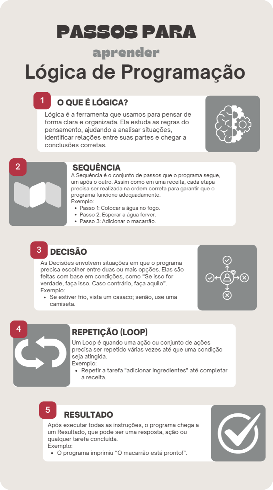

Objetivo: Compreender os conceitos básicos de lógica e introdução a algoritmo.
Vamos começar com um desafio. Já parou para pensar quantas ações você realiza para abrir uma porta? Pode parecer simples, mas pense um pouco sobre isso.
Cenário: Imagine que você está em frente a uma porta. O que você faz para abri-la?
Essas ações parecem automáticas, mas pense nos detalhes: quantos músculos você usa para estender a mão? Como seu cérebro coordena o movimento para segurar e girar a maçaneta? Cada uma dessas etapas é uma pequena decisão que seu corpo toma, sem que você precise pensar muito sobre isso.
Assim como seu cérebro precisa comandar cada movimento, a lógica funciona como as instruções que damos ao nosso cérebro para realizar essas tarefas. A lógica organiza o que deve ser feito e em que ordem, garantindo que tudo funcione como esperado.
Da mesma forma, um computador precisa de instruções claras para funcionar. Ele não consegue fazer nada sozinho; precisa que alguém diga a ele o que fazer, passo a passo, assim como seu cérebro comanda seu corpo.
O que é Lógica?
Agora, vamos falar sobre lógica na programação. Programação é quando você dá instruções para um computador fazer algo, como um jogo funcionar ou um site abrir. A lógica de programação é o jeito de organizar essas instruções para que o computador entenda e faça o que você quer. Imagine que você está ensinando alguém a fazer um sanduíche... Você diria:
Essas etapas precisam estar em uma ordem certa para que o sanduíche seja feito corretamente. É a mesma coisa na programação: as instruções precisam estar em uma ordem que faz sentido.
Quando você escreve um programa, está basicamente criando um plano que o computador vai seguir para resolver um problema. Usar lógica ajuda você a garantir que esse plano funcione corretamente. Se você pensar de maneira clara e organizada, o computador vai entender suas instruções e fazer o que você quer.
Infográfico:

#SagaDosComputadores Ep. 8
Manual do Mundo
(Guia RÁPIDO de estudos completo para INICIANTES)
Attekita Deu
Ponte escura:
https://rachacuca.com.br/jogos/ponte-escura/Tutoriais do Minecraft no Hour of Code:
https://rachacuca.com.br/jogos/ponte-escura/Lógica é o jeito que usamos para pensar de maneira clara e resolver problemas, tanto no dia a dia quanto na programação.
Quando você entende a lógica de programação, consegue dar instruções precisas ao computador, fazendo com que ele realize tarefas exatamente como planejado. Mesmo que nunca tenha programado antes, começar a pensar com lógica é o primeiro passo para aprender a programar!